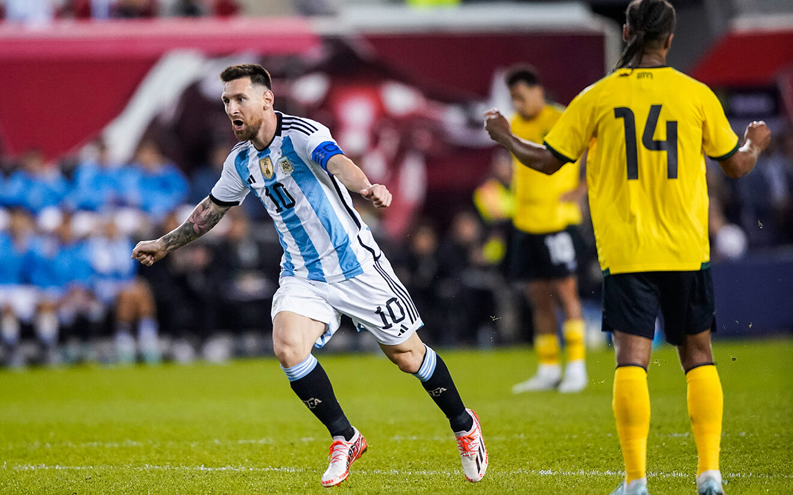
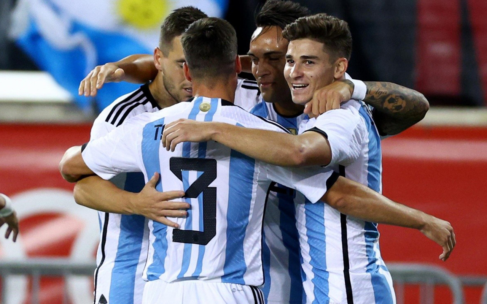
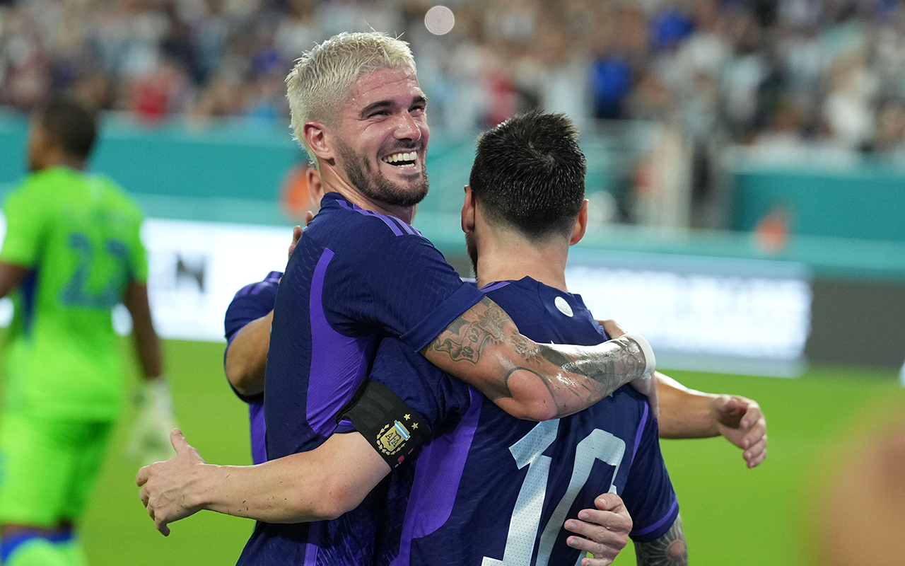
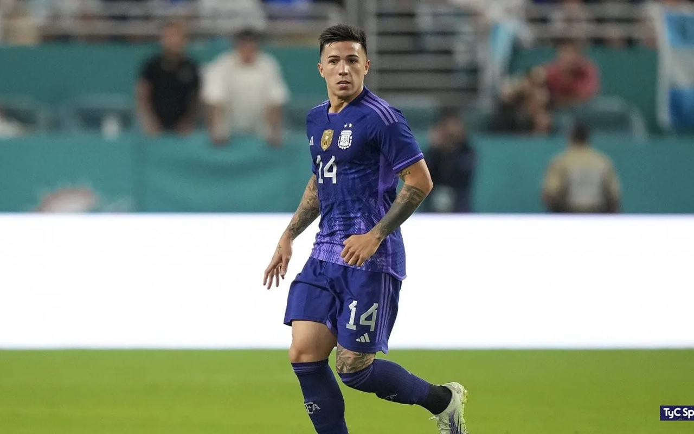

DOBLETE DE MESSI
Lionel ingresó en el segundo tiempo y demostró que esta encendido de cara al Mundial con dos golazos para sellar el resultado.

LA ARAÑA ILUSIONA
Julián Álvarez volvió a anotar en la selección y ya parece tener un lugar asegurado en la lista de 26 convocados que viajarán a Qatar.

SE MANTIENE EL INVICTO
El equipo de Scaloni acumula 35 partidos sin ser derrotado y esta muy cerca de superar el record histórico de Italia
